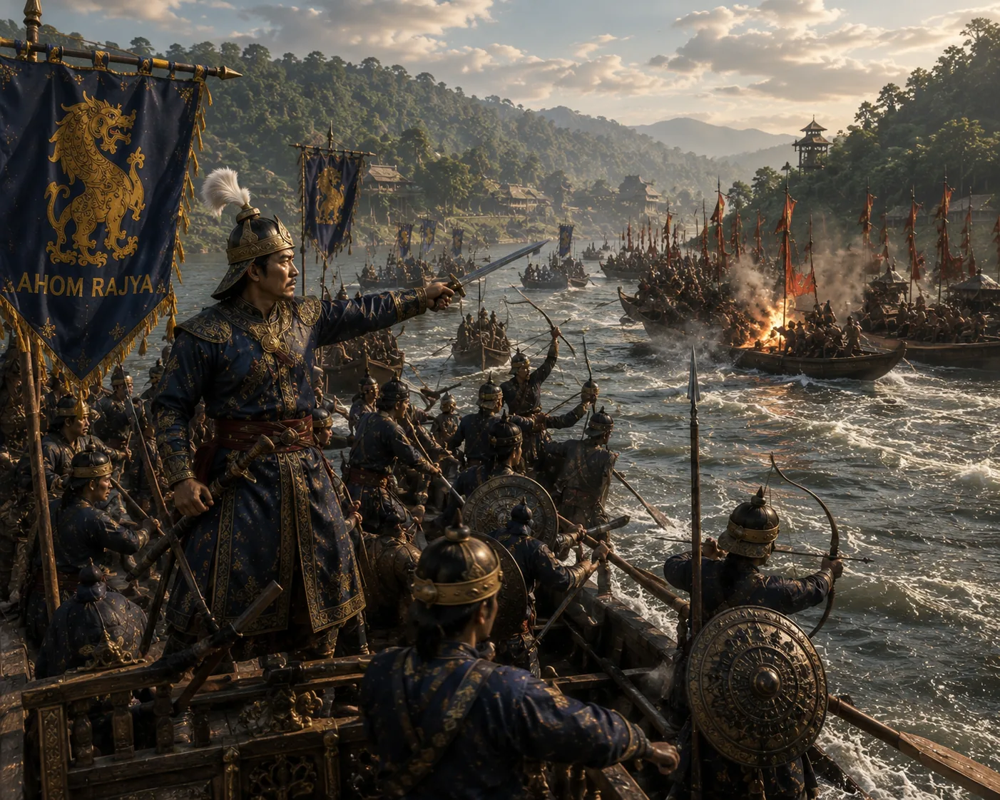

Ahom Naval Flotilla River Engagement
c. 1532 · Swarganarayan’s kingdom

Ahom Bachari war-boats and rowers maneuver against enemy rivercraft with bowmen and bow mounted swivel-guns.
Sources have not yet been catalogued for this record.
People: Suhungmung (Swarganarayan)
Open this scene in the interactive archive · Follow this event on MAP